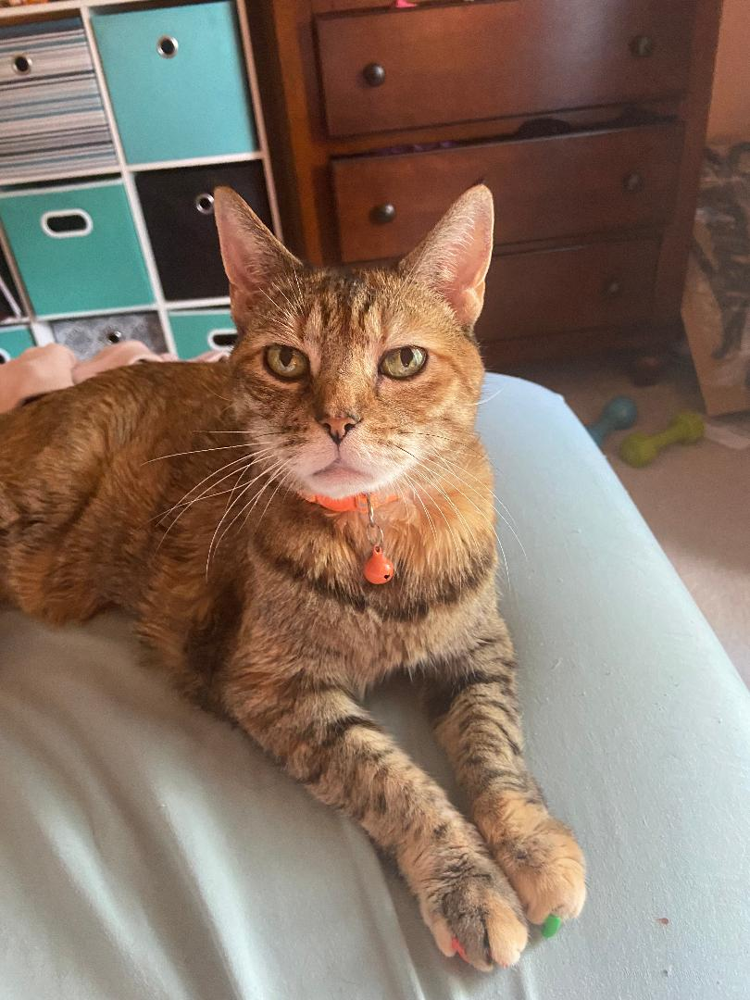

I adopted Mylie from a local shelter in 2008 when she was 1.5. She was really unhappy and stressed out being there with all the barking dogs and other cats, so her true personality did not show right away. I was still drawn to how pretty she was, though. I left for the night to think about whether I wanted to take her home. By morning I couldn't believe I left her there in the shelter, cause she belongs with me! As soon as she entered my apartment she became a calmer and more playful cat and I've loved her immensely. I've taken her with me everywhere I moved to over the years, including Georgia, Minnesota, Indiana and back to New Hampshire. She's been on cars, trains, and planes. Her life now is much more stable, though she has to put up with her two unwanted little brothers, Pepe and Ichi.
Mylie's Traits:
- Food obsessed
- Territorial
- Talkative
- Warms up to everyone right away
| Favorite Thing | Favorite Toy | Best Quality |
|---|---|---|
| Eat | Birdtoy | Resilient |